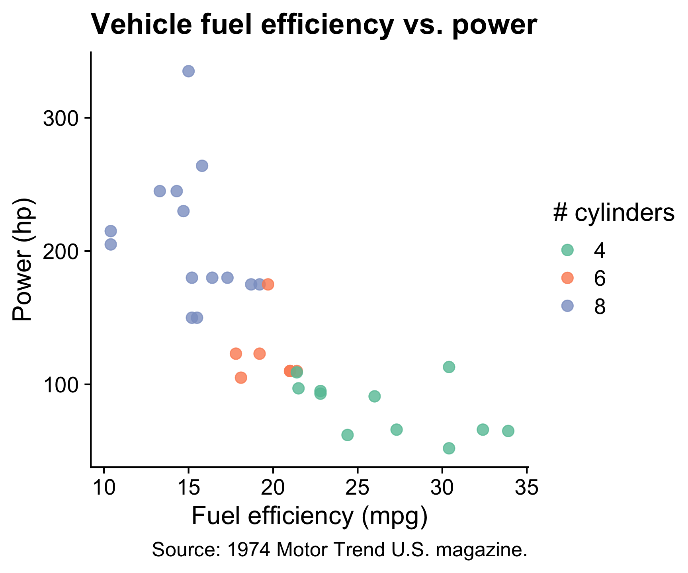
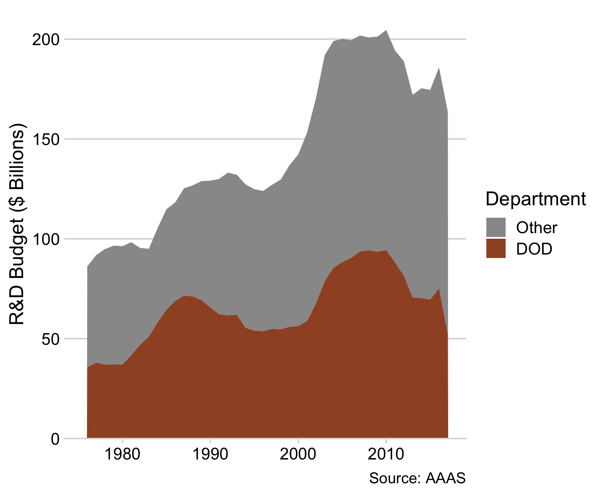
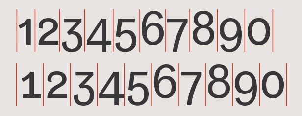
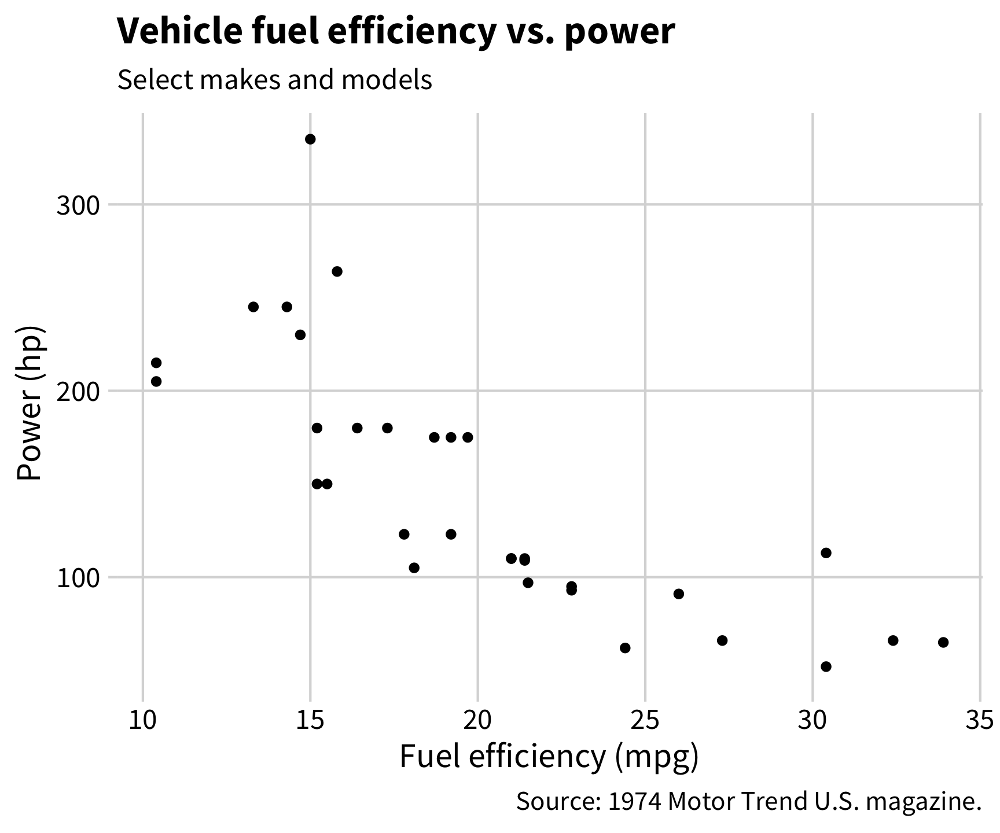
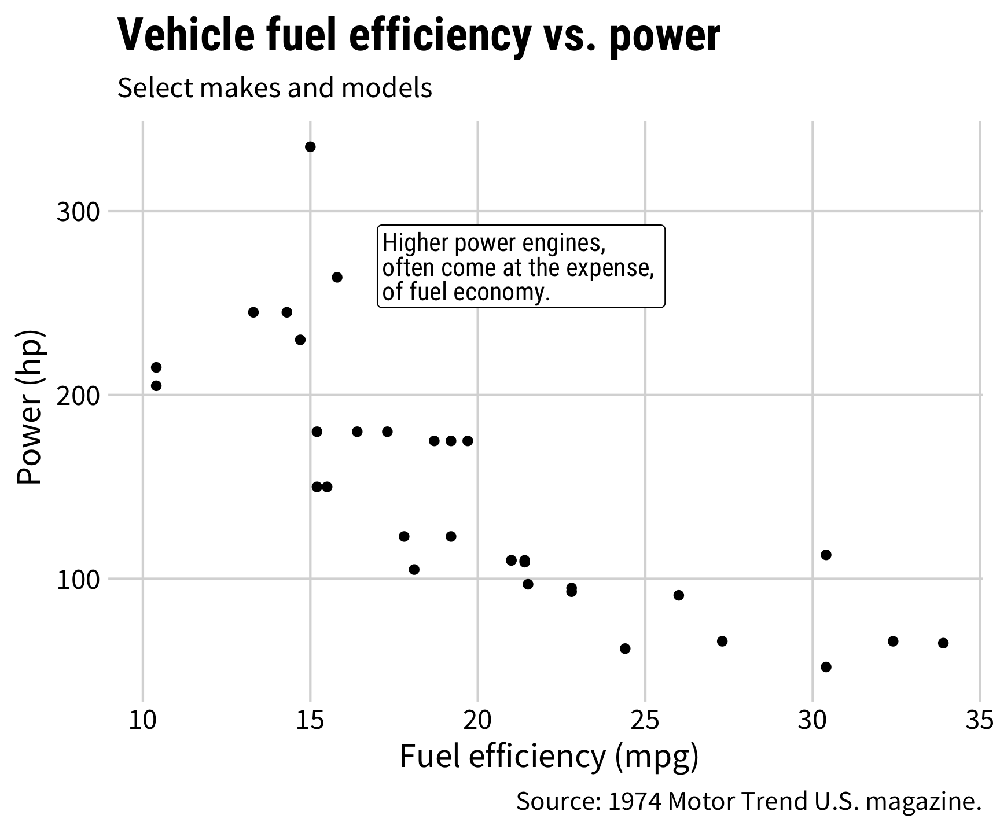
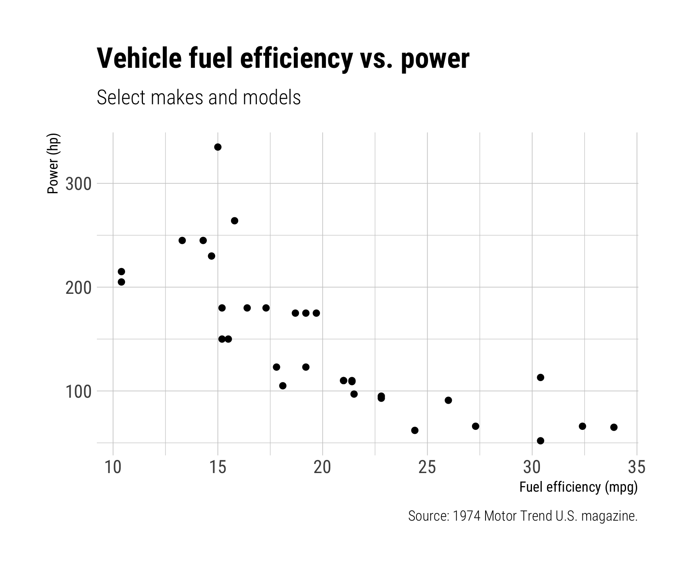
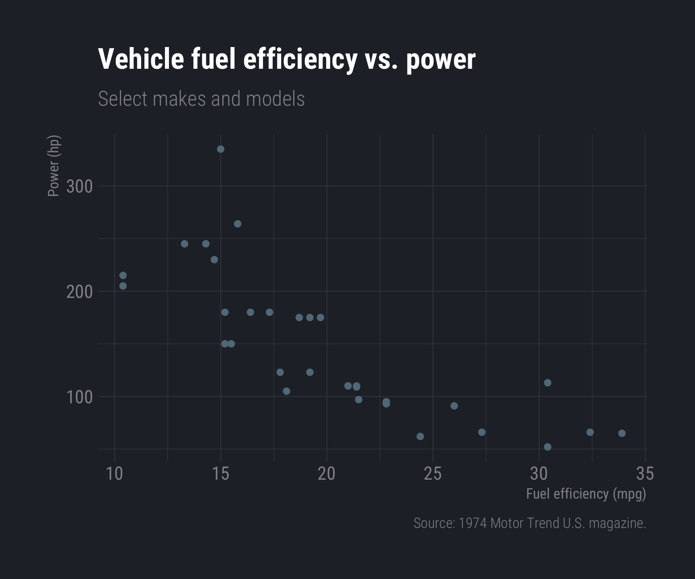

labs(
x = 'Year',
y = 'Cost of incident repairs ($ millions)',
title = 'Repair costs of aircraft impacts with wildlife',
subtitle = 'Top 4 airlines',
caption = 'Source: https://wildlife.faa.gov/home'
)15 Plot Aesthetics
15.1 Annotations
Text is usually the single most important component on your chart
As seen below, text is what catches your attention first.
Michelle Borkin, et al. (2015) Beyond Memorability: Visualization Recognition and Recall
Titles matter
Below is an example of a chart with an incorrect title.

Source: https://www.reddit.com/r/dataisugly/comments/odk65x/this_was_not_the_right_headline_to_go_along_with
Good annotations should tell a story

Source: https://ourworldindata.org/less-meat-or-sustainable-meat
Use captions as a way to annotate
Use mapped variables in aes() in labs()
milk_production %>%
filter(year %in% c(1970, 2017)) %>%
group_by(year, region) %>%
summarise(milk_produced = sum(milk_produced) / 10^9) %>%
ungroup() %>%
mutate(
region = fct_reorder2(region, year, desc(milk_produced))) %>%
ggplot() +
geom_col(
aes(x = milk_produced,
y = region,
fill = as.factor(year)),
position = "dodge") +
scale_x_continuous(expand = expansion(mult = c(0, 0.05))) +
theme_minimal_vgrid() +
labs(
x = 'Milk produced (billions lbs)',
y = 'Region',
title = 'Milk production by region',
subtitle = '1970 & 2017')Use labs() to label everything.
milk_production %>%
filter(year %in% c(1970, 2017)) %>%
group_by(year, region) %>%
summarise(milk_produced = sum(milk_produced) / 10^9) %>%
ungroup() %>%
mutate(
region = fct_reorder2(region, year, desc(milk_produced))) %>%
ggplot() +
geom_col(
aes(x = milk_produced,
y = region,
fill = as.factor(year)),
position = "dodge") +
scale_x_continuous(expand = expansion(mult = c(0, 0.05))) +
theme_minimal_vgrid() +
labs(
x = 'Milk produced (billions lbs)',
y = 'Region',
title = 'Milk production by region',
subtitle = '1970 & 2017',
fill = "Year")Legends suck
Legends require look-up task
ggplot(milk_region,
aes(x = year, y = milk_produced,
color = region)) +
geom_line(size = 1) +
scale_color_manual(values = c(
'sienna', 'forestgreen', 'dodgerblue', 'orange')) +
theme_half_open(font_size = 18) +
labs(x = 'Year',
y = 'Milk produced (lbs)',
color = 'Region',
title = 'Milk production in four US regions')
ggplot(federal_spending_summary) +
geom_area(
aes(x = year, y = rd_budget_mil, fill = department)) +
scale_y_continuous(
expand = expand_scale(mult = c(0, 0.05))) +
scale_fill_manual(values = c('grey', 'sienna')) +
theme_minimal_hgrid() +
labs(
x = NULL,
y = 'R&D Budget ($ Billions)',
fill = 'Department',
title = 'Federal R&D spending, 1976 - 2017',
subtitle = 'Source: AAAS Historical Trends')Direct labeling is much better


Use annotate() to add text to chart
Use geom_text() to add text to chart

Use geom_label() to add text to chart with a background
Use geom_curve() + geom_label() to direct attention
Use annotate() to direct attention
Use geom = "rect" for box, geom = "text" for label
Find where to put annotations with ggannotate
Install:
remotes::install_github("mattcowgill/ggannotate")Use:
library(ggannotate)
plot <- ggplot(mpg) +
geom_point(aes(x = displ, y = hwy, color = as.factor(cyl))) +
theme_half_open()
ggannotate(plot)15.2 Colors
Color is hard
How do I know what colors look good together?
Use the color wheel
Image from this color wheel tool
- Complementary: High contrast

- Analogous: Calm, harmonious
- Triadic: Vibrant, contrast
Using your own colors
Map color to variable
mpg_plot <- ggplot(mtcars, aes(x = mpg, y = hp)) +
geom_point(
aes(color = as.factor(cyl)),
alpha = 0.8, size = 3) +
theme_half_open(font_size = 16) +
labs(x = "Fuel efficiency (mpg)",
y = "Power (hp)",
color = '# cylinders',
title = "Vehicle fuel efficiency vs. power",
caption = "Source: 1974 Motor Trend U.S. magazine.")Manually change colors
mpg_plot +
scale_color_manual(values = c(
'#a0522d', '#522da0', '#2da052'))
Consider color blind friendly colors
Simulate color blindness with colorblindr
# remotes::install_github("clauswilke/colorblindr")
library(colorblindr)
cvd_grid(mpg_plot_mycolors)
Use palettes


3 types of palettes
- Sequential

Image from betterfigures.org
- Diverging

Image from betterfigures.org
- Categorical

Image from betterfigures.org
ColorBrewer palettes
Map color to variable
mpg_plot <- ggplot(mtcars, aes(x = mpg, y = hp)) +
geom_point(aes(color = as.factor(cyl)),
alpha = 0.8, size = 3) +
theme_half_open(font_size = 16) +
labs(x = "Fuel efficiency (mpg)",
y = "Power (hp)",
color = '# cylinders',
title = "Vehicle fuel efficiency vs. power",
caption = "Source: 1974 Motor Trend U.S. magazine.")Use “Dark2” palette
mpg_plot +
scale_color_brewer(palette = 'Dark2')Set1
mpg_plot +
scale_color_brewer(
palette = 'Set1')Set2
mpg_plot +
scale_color_brewer(
palette = 'Set2')
Accent
mpg_plot +
scale_color_brewer(
palette = 'Accent')viridis palettes
Map color to variable
mpg_plot <- ggplot(mtcars, aes(x = mpg, y = hp)) +
geom_point(aes(color = as.factor(cyl)),
alpha = 0.8, size = 3) +
theme_half_open(font_size = 16) +
labs(x = "Fuel efficiency (mpg)",
y = "Power (hp)",
color = '# cylinders',
title = "Vehicle fuel efficiency vs. power",
caption = "Source: 1974 Motor Trend U.S. magazine.")Use viridis colors
mpg_plot +
scale_color_viridis(discrete = TRUE)virdis
mpg_plot +
scale_color_viridis(
discrete = TRUE,
option = 'viridis')
inferno
mpg_plot +
scale_color_viridis(
discrete = TRUE,
option = 'inferno')plasma
mpg_plot +
scale_color_viridis(
discrete = TRUE,
option = 'plasma')Fun custom palettes:


Consider using color + fill for points
ggplot(mtcars, aes(x = mpg, y = hp)) +
geom_point(
aes(fill = as.factor(cyl)),
color = 'white', shape = 21,
size = 3.5, alpha = 0.8) +
scale_fill_brewer(palette = 'Dark2') +
theme_half_open(font_size = 15) +
labs(
x = "Fuel efficiency (mpg)",
y = "Power (hp)",
fill = '# cylinders',
title = "Vehicle fuel efficiency vs. power",
caption = "Source: 1974 Motor Trend U.S. magazine.")Use grey for “Other”
dod_spending_plot <- federal_spending %>%
mutate(department = fct_other(
department, keep = 'DOD')) %>%
group_by(department, year) %>%
summarise(rd_budget_mil = sum(rd_budget_mil) / 10^3) %>%
ungroup() %>%
mutate(department = fct_relevel(
department, c('Other', 'DOD'))) %>%
ggplot() +
geom_area(aes(x = year, y = rd_budget_mil,
fill = department)) +
scale_y_continuous(
expand = expand_scale(mult = c(0, 0.05))) +
scale_fill_manual(
values = c('grey', 'sienna')) +
theme_minimal_hgrid() +
labs(x = NULL,
y = 'R&D Budget ($ Billions)',
fill = 'Department',
caption = 'Source: AAAS')
dod_spending_plotdod_spending_plot +
scale_fill_manual(
values = c('grey40', 'sienna'))dod_spending_plot +
scale_fill_manual(
values = c('grey60', 'sienna'))
dod_spending_plot +
scale_fill_manual(
values = c('grey80', 'sienna'))15.3 Fonts
Fonts matter
“Fast Taco”

“Mega Flicks”

The best resource on fonts:
Some font families you should consider using:
Roboto
Source
Fira
Alegreya
Lato
Download:
- Individually from https://fonts.google.com/
- All of these with this zip file
Use fonts to create hierarchy
# Hierarchy
## Hierarchy
### Hierarchy
#### Hierarchy16 Hierarchy
16.1 Hierarchy
16.1.1 Hierarchy
16.1.1.1 Hierarchy
Use fonts with same-height numbers
“Oldstyle” (bad)
Lining (good)

Use fonts with same-width numbers
“Proportional” (bad)
“Tabular” (good)

16.1.2 How to customize fonts in ggplot
1. Change the whole theme
For “Base R” themes, use base_family:
theme_minimal(base_family = "Roboto Condensed")theme_bw(base_family = "Roboto Condensed")For “cowplot” themes, use font_family:
theme_half_open(font_family = "Roboto Condensed")theme_minimal_grid(font_family = "Roboto Condensed")First, make the base plot
mpg_plot <- ggplot(mtcars) +
geom_point(aes(x = mpg, y = hp)) +
theme_minimal(base_size = 15) +
labs(
x = "Fuel efficiency (mpg)",
y = "Power (hp)",
title = "Vehicle fuel efficiency vs. power",
subtitle = "Select makes and models",
caption = "Source: 1974 Motor Trend U.S. magazine.")Use base_family with base themes
mpg_plot <- ggplot(mtcars) +
geom_point(aes(x = mpg, y = hp)) +
theme_minimal(
base_family = 'Source Sans Pro',
base_size = 15) +
labs(
x = "Fuel efficiency (mpg)",
y = "Power (hp)",
title = "Vehicle fuel efficiency vs. power",
subtitle = "Select makes and models",
caption = "Source: 1974 Motor Trend U.S. magazine.")Use font_family with cowplot themes
mpg_plot <- ggplot(mtcars) +
geom_point(aes(x = mpg, y = hp)) +
theme_minimal_grid(
font_family = 'Source Sans Pro',
font_size = 15) +
labs(
x = "Fuel efficiency (mpg)",
y = "Power (hp)",
title = "Vehicle fuel efficiency vs. power",
subtitle = "Select makes and models",
caption = "Source: 1974 Motor Trend U.S. magazine.")
2. Adjust theme elements with element_text()
mpg_plot <- ggplot(mtcars) +
geom_point(aes(x = mpg, y = hp)) +
theme_minimal_grid(
font_family = 'Source Sans Pro',
font_size = 15) +
theme(
plot.title = element_text(
family = "Roboto Condensed",
size = 20)) +
labs(
x = "Fuel efficiency (mpg)",
y = "Power (hp)",
title = "Vehicle fuel efficiency vs. power",
subtitle = "Select makes and models",
caption = "Source: 1974 Motor Trend U.S. magazine.")
mpg_plotSee theme components here
3. Adjust annotations:
(Using geom_text(), geom_label(), and/or annotate())
label <- "Higher power engines,
often come at the expense,
of fuel economy."
mpg_plot +
geom_label(
data = data.frame(
x = 17, y = 270, label = label),
aes(x = x, y = y, label = label),
lineheight = .8, hjust = 0,
family = 'Roboto Condensed')
The hrbrthemes package:
Great themes + great fonts
library(hrbrthemes)
mpg_plot <- ggplot(mtcars) +
geom_point(aes(x = mpg, y = hp)) +
labs(
x = "Fuel efficiency (mpg)",
y = "Power (hp)",
title = "Vehicle fuel efficiency vs. power",
subtitle = "Select makes and models",
caption = "Source: 1974 Motor Trend U.S. magazine.")
mpg_plot +
theme_ipsum()mpg_plot +
theme_ipsum()
mpg_plot +
theme_ipsum_rc()
mpg_plot +
theme_ft_rc()